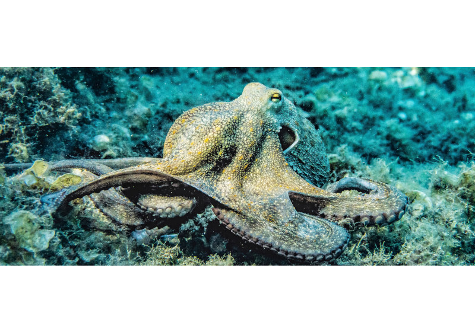
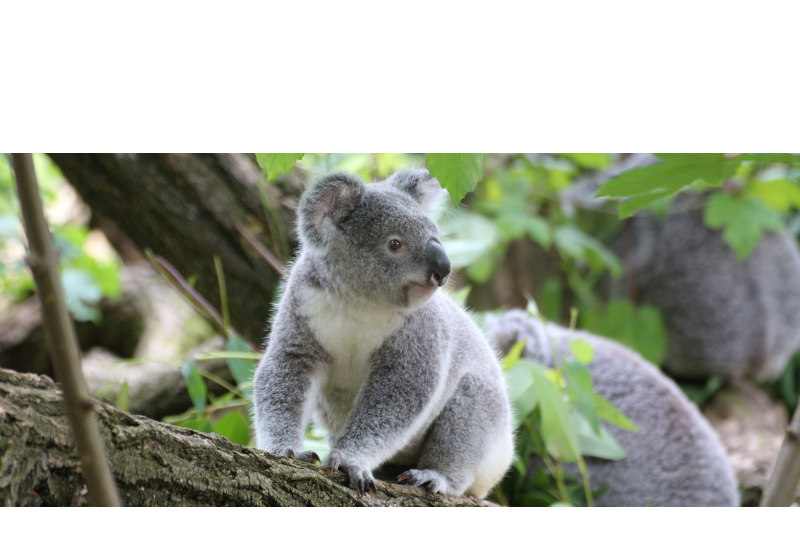
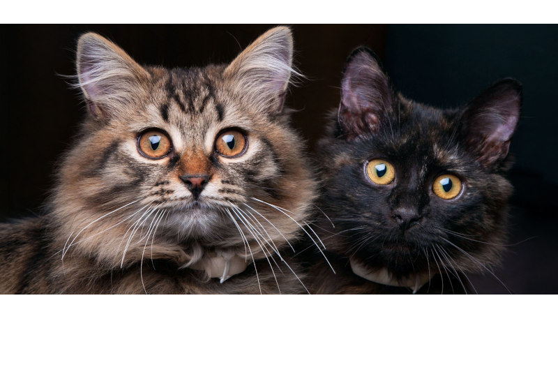
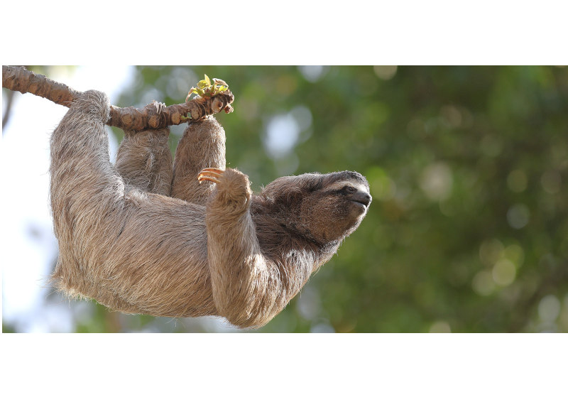
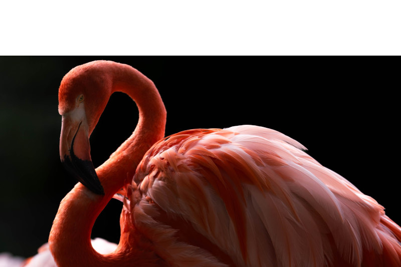
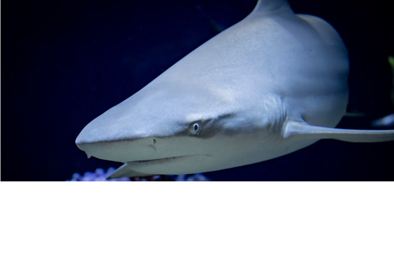

Polvos
🐙 Os polvos possuem três corações, que bombeiam um sangue azul-esverdeado. Essa cor é resultado do cobre, a molécula que transporta oxigênio no sangue dos polvos, em vez do ferro, como no sangue humano.
Por conta de suas células cerebrais distribuídas nos tentáculos, eles são muito inteligentes. Tanto que podem ser treinados para realizar tarefas de memória.

Coalas
🐨 Os coalas possuem impessões digitais são tão parecidas com as humanas que já chegaram a confundir investigadores.
Os coalas são animais extremamente dorminhocos. Eles passam entre 18 e 20 horas por dia dormindo. Isso acontece porque a alimentação deles é baseada em folhas de eucalípto, que são pobres em calorias, difíceis de digerir e ainda contêm toxínas naturais.

Gatos
🐱 Os gatos reservam o miado exclusivamente para interagir com os humanos; entre si, raramente miam.
Gatos têm 53 vértebras nas costas. É por isso que são tão flexíveis. Um humano, por exemplo, tem 34. Assim como as impressões digitais de humanos, cada gato tem um nariz que é único.

Bicho-preguiças
🦥 O bicho-preguiça pode ser dividido em dois grupos principais: os de dois dedos gênero Choloepus e os de três dedos gênero Bradypus. Os números de dedos não está ligado apenas às patas dianteiras, mas também à sua forma de se locomover.
Os bichos-preguiças possui o metabolismo muito lento, elas podem levar até um mês para digerir uma única folha.

Flamingo
🦩 Os flamingos nascem com penas brancas ou cinzas e só adquirem a cor rosa por causa da sua dieta rica em pigmentos.
Eles não são mamíferos, mas podem produzir uma espécie de "leite" em seus tratos digestivos superiores. Tanto os machos, quanto as fêmeas produzem essa substância para alimentar seus filhotes, que contém proteína, gordura e glóbulos vermelhos e brancos, como o leite dos mamíferos.

Tubarões-brancos
🦈 Os tubarões-brancos podem detectar uma única gota de sangue na água a quilômetros de distância e possuem fileiras de dentes que são constantemente repostas ao longo da vida.
O único predador do tubarão-branco na natureza é a baleia orca, que vira o animal de ponta cabeça para que ele não consiga se mexer e o mata com fortes pancadas em seu corpo.
